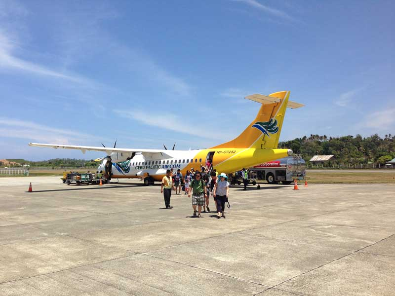
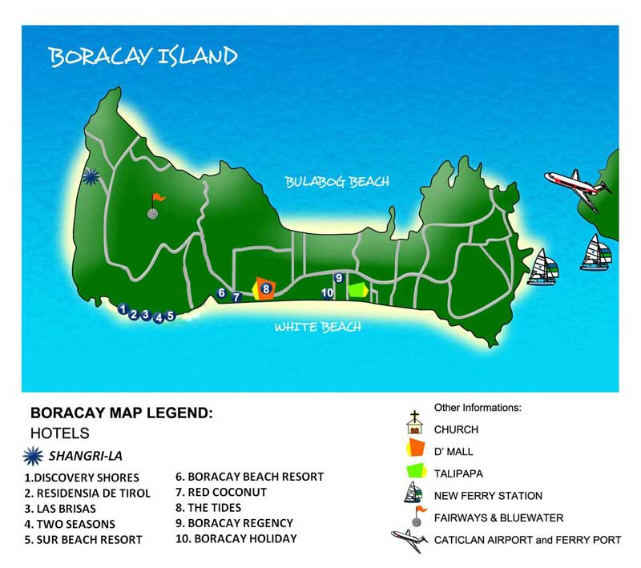

The wedding will be held at the gorgeous Shangri-La Resort and Spa on the lovely and beautiful island of Boracay which is located in the Philippines. Unfortunately, there are no direct flight from the US to Boracay.
US to the Philippines
There are a few options to get to the Philippines.
- Direct flight on Philippine Airlines to Manila
- 1 stop at one of many asian airports then head to Manila
- 1 stop at one of many asian airports then head to Cebu
Here is something to think about when deciding your route for transit. The airport at Manila is not the best. All international flights that come into Manila end up Terminal 1 except for Philippine Airlines and All Nippon Air. Philippine Airlines arrives at Terminal 2. To make the connection flight for Boracay, you will need to make your way over to Terminal 3. These terminals are not connected to each other. A google map shows that the transit time between T1 and T3 is about 23 minutes without traffic. Traffic is a serious issue in the Philippines, it is not a joke. To be safe, give yourself about 3-4 hours to get through customs and make the transfer. Checking in will take a little bit of time as well. There is an external shuttle that takes passengers between terminals on surface streets. The main problem with this is that traffic is horrendous in the PH. If you choose this route, please give yourself plenty of time to collect your bags, find and take the shuttle, and check-in for your next flight. You could also opt for a taxi as this post mentions.
Note: If you take Philippine Airlines, they seem to have an airside shuttle that takes passengers between Terminal 2 and 3. More info can be found here.
Philippines to Boracay

Now that you have read about getting from the US to PH, lets talk about going from PH to Boracay. Getting to Boracay requires a very short flight and a boat ride. Depending on which hotel you stay at, may need to transfer to a car as well. Will go into that later on. There are two for options for getting to Boracay. You can fly into 1 of 2 different airports. Caticlan, which is the smaller airport, is only served by smaller planes. When I say smaller, I am talking about plane with propellers. If you are ok with this, this is the closest of the 2 to the jetty. I will talk more about the jetty in a bit. The other airport is Kalibo. Kalibo is a international airport that has flights on airplanes you are accustomed to. The downside to this is that the airport is about a 90 minute drive to the jetty. If you choose that route, our wedding coordinator can help with your transfer. By experience, I have only flew into Caticlan and havent had any problems. There are about 4 airlines that fly into Caticlan, but we recommend Cebu Pacific or PAL Express.
Jetty/Caticalan Pier
No matter which airport you choose for Boracay, you will need to make your way to the jetty for a boat transfer. It seems like the only hotel that does not require a road transfer is the Shangri-La. For all other hotels, a 15 minute ride on a Banca Boat to the boracay pier and a van ride to your hotel.
Caticlan:
Once you have completed the registration form, exit the airport and turn right to the tricycle terminal booth which sells tickets for your tricycle fare to the Caticlan jettyport (PHP50 per trike). They also sell boat ride tickets (PHP25/person) and Environmental Fee tickets (PHP75/per person). We recommend that you purchase these tickets here rather than at the jettyport.
At the jettyport, look for the window which sells the Terminal Fee (P50/person). You will need to show this ticket and the Environmental Fee ticket to gain entry to the jettyport.
After the 15-minute boat ride, take a tricycle (PHP100 special fare = which means you have it to yourself and not share with other passengers) or a multicab to your hotel.
Kalibo:
Disclaimer: We borrowed the info for this section as we have never flown into Kalibo.
The other airport is Kalibo (KLO), which is 1.5 hours away by land to the jettyport. PAL, Air Philippines and Cebu Pacific fly here using bigger planes. You can take Southwest coaster bus (300php/person) or any local van that is parked outside the airport (P175/person) or you may also hire a van for special trips (P1,500 for 8 passengers) to the Caticlan jettyport.
If you don't want the hassle of taking care of your transfers, Southwest Tours offers an island transfers service. The rate per person is P400 (one-way) for Caticlan airport-Boracay transfers and P500/person, one-way for Kalibo-Caticlan-Boracay transfers.
You may make your reservation online at http://southwesttoursboracay.com/
Once you have your airfare sorted out and hotel figured out, our wedding coordinator, Amanda Tirol can help you get from either Caticlan or Kalibo to your hotel of choice. She can be reached at boracayweddings@yahoo.com. If you have any questions for us, please give us a call or email wedding@helladitto.com.
Note: You should wear some sandals once you get to boracay as you may get wet
Caticlan to Shangri-La
Kalibo to Shangri-La
Boracay Accommodations
Below are just few options/suggestions on places to stay on the island.
Our coordinator, Amanda Tirol has a list of discounted hotels and resorts for our guests to choose from.
You can email her directly for more information at boracayweddings@yahoo.com if you have questions regarding any of the resorts/hotels below.
Option 1: Shangri-La's Boracay Resort & Spa
We are having our wedding here and will also be staying here for the duration of our time on the island. If you are interested in Shangri-La, please contact our wedding planner Amanda Tirol (boracayweddings@yahoo.com) for reservations and mention the Coh/Lee wedding for special rates and to finalize booking.
Note as of 5/18/2014: The last day to receive the group rate is 7/31/2014. After that, the current prevailing rate will be used.
Option 2: Fairways and Bluewater Newcoast
Fairways is right next door to our wedding venue. We have stayed there twice and we have always had a great experience.
Below are the discounted rates. If you would like to stay at Fairways at this rate, you will have to book through our wedding coordinator, Amanda Tirol (boracayweddings@yahoo.com).
* Superior room - P 4000 net per night for 2
* Premiere room - P 4,550 net per night for 2
* Junior Suite room - 4,950 net per night for 2
* Executive Suite - P 6,600 net per night for 2
* One Bedroom Suite - P 7,150 net per night for 2
* Two Bedroom Suite- P 9,850 net per night for 2
* Chairmans Suite (two bedroom ) - P 13,650 net per night for 2
- Rate include daily breakfast for 2 and for 4 for the Two Bedroom rooms
- Free shuttle service to D'mall
- Extra person charge is P 1400 net per night
Option 3: White House Beach Resort
Option 4: Discovery Shores
Option 7: Sea Wind Resort
Option 8: Pearl of the Pacific
Info about PI and Boracay

Boracay is a bone-shaped island about an hour's flight away from Manila. It has two main beaches- White Beach and Bulabog Beach. In 2007, Yahoo Travel placed Boracay as the #1 most popular beach destination in the world- besting even Nassau, Montego Bay, and Honolulu. And more recently, Boracay made it to the 4th spot in Travel+Leisure magazine's 2011 World's Best Islands.
White Beach
Is roughly 2 miles long, is where majority of the hotels are. There are three sections here- Station 1, 2, and 3.
Station 1. This is the area where you will find luxury hotels. The accommodations are expensive but with premium quality and service to match. The beach is at its widest in Station 1, so the hotels here have more extensive beach fronts.
Station 2. This is the restaurant, shopping, and entertainment heart of White Beach where most of the action on the island takes place. D'Mall, a collection of hundreds of small shops and restaurants, is also here. Needless to say, this area gets very crowded and noisy. Mid-priced accommodations are widely available here.
Station 3. This is the least developed section where budget accommodations can be found. Because of its distance away from Station 2, it is a lot more quiet here. But recently, more upscale accommodations have been developed to take advantage of the area's more relaxed atmosphere.
Shangri-La does not belong to any of the three stations. It is located by itself on the northernmost tip of the island.
On the other side of White Beach is Bulabog Beach. Because of its unique wave breaking reefs and ideal wind situations, Bulabog Beach is the wind sports center of the island. It has also been hailed as Asia's best kiteboarding location.
More information on Boracay is available at Wikipedia and My Boracay Guide.
Activities in Boracay
One of the many reasons why we chose Boracay is not only its breathtaking beauty but also the activities this island has to offer.
SPA MASSAGE
There are many ways to treat yourself to a relaxing spa or massage on Boracay. For the budget traveler, there are many independent women that will walk down the beach and offer massages right on the sand. (300PhP). There are also numerous massage stations on the footpath (350 PhP). There are some hotels that have massage houses on the beach that also offer quality massages. Some hotels offer in-house massage services on the beach or in your room. If you are looking for a spa, try Bella Isa in Station 3 or Yasuragi (also in Station 3) for massage, wet and dry saunas and a Jacuzzi. For more upscale treatments, try Lava Stone, Poseidon Spa, Mandala, or Tirta Spa.
"The best massages and spas in Boracay below!"
ISLAND HOPPING - CRYSTAL COVE
Getting out into the waters around Boracay is a beautiful way to see the island. The Paraw is a simple sailboat that will take you around the island, where you can stop off at many of Boracay's 12 beaches for a swim, snorkel or picnic. Many of these beaches are deserted, some accessible only by boat. Crystal Cove is one of these islands and undoubtedly one of the highlights of an island hopping trip. True to its name, this 2.5 hectare island is blessed with crystal clear waters which you can admire from shore or immerse yourself in a tropical wonderland. You can also swim into two caves which the island has to offer. The 200 pesos entry fee is definitely worth the experience!
Price range: Php700-1,200 per head (with buffet lunch)
BORACAY NIGHTLIFE!
Boracay Nightlife offers many night spots for drinks, dancing, karaoke and other entertainment, each with its own ambiance.
The many bars in Boracay and especially those along Boracay Beach, are more than the heat of the Boracay Nightlife. Most Boracay Bars and Restaurants are open not only at night but in the morning and all day! During the high season in Boracay, the night spots are often crowded on weekends. Some Boracay Bars and clubs charge an entrance fee. Boracay weekdays generally offer smaller crowds and less action.
SUNSET SAILING
Enjoy the sunset from the fast and light weight local sailboats. The sailors here are offering sunset sail trips to let you enjoy the beauty of a tropical sunset on the ocean with a gentle breeze of wind and a few drops of salty water in your face.
Price Range: Php450-600 for an hour
PARASAILING
Whether you are a watersports enthusiast or a newcomer to Boracay Island, you may want to include parasailing in your to do list.
For the spectator it looks hard, but once you get started, you get to feel the adrenaline rush, and the incomparable feeling of calmness too, as man, nature and machine seem to merge as one.
Price Range: Php1,200 - 2,000 per head
REEF WALKING
This is the newest craze in the island of Boracay!
This new activity allows you to walk on some of the most interesting reefs in the island or just sit back and enjoy the underwater show! No need to learn how to dive or even swim like an expert. All you have to do is to wear a helmet with a hose connected from an oxygen tank then descend a ladder to the seabed when you can view the ocean's magnificent sea creatures. You may play with them and feed them.
This activity is guaranteed to be safe, fun and easy so even kids who are just seven years old can enjoy this to the fullest!
Price range: Php400-500 per head with pictures and videos
DIVING
Diving is extremely popular around Boracay. The waters surrounding Boracay have excellent sites for beginners and experienced divers alike. The waters are packed with vibrant fish and reefs, wreck sites, caves and canyons. There are 30+ great dive sites within 30 minutes of Boracay, and 30 quality dive shops on the island. Diving is year round, although the best diving is considered to be January to June. PADI (no license required) Discovery Dives are around 3,000 PhP, and PADI open water certification courses are 15,000-20,000 PhP. Other courses available are advanced open water, advanced plus, rescue through dive master, as well as drift diving, night diving, cave diving, deep diving, and wreck diving... just to name a few! For experienced dive instructors and great equipment rentals try Blue Mango, Dive Gurus and White Beach Divers. If you want to buy snorkel or dive gear, go to Asia Divers in D'mall just down from Crafts of Boracay Supermarket.
RELAX!
After all, you are on vacation.

ATV ADVENTURE
If you're not into water sports or any adventure that has to do with water, then this exciting land adventure, the ATV(All-Terrain Vehicle) ride will bring so much fun in your Bora adventure!
There are 2 spots to visit, Mt. Luho View Point and the Butterfly Garden.
KITE SURFING
This sport basically uses a parachute-type kite and 4 lines hooking up the surfer and his surfboard.
However, it seems like this kite-surfing is a little regulated like scuba-diving so you will need to take a 3 and a half day course which costs about $350. A little on the expensive side but it looks too exciting to pass up.
GOLF
Playing golf in Boracay makes your trip something different. It makes you feel the opulent and relax feeling of being in a paradise and golfing jewel in one of the world's best beaches.
Boracay has Fairways & Bluewater Resort Golf and Country Club. A golf and country club that is perfectly different from the rest because of its exquisite location with its breathtaking sceneries. Fairways & Bluewater has an 18 hole, par 72 world class golf course that was designed by an international golf designer, Graham Marsh.
OUR WEDDING
The best activity on Boracay is attending our wedding!

The Wedding
If you're interested in learning a few details about our big day...
The Ceremony and Reception:
Friday, January 9, 2015
Shangri-La's Resort and Spa Boracay
4:30pm
Cocktail hour and the reception will immediately follow the ceremony.
What to expect:
We are having a beach wedding and reception, so don't forget to wear sunscreen and your sunglasses. If the weather doesn't cooperate with us, don't worry... we have a contingency plan.
What to wear:
Since we are having a beach wedding, dress appropriately. Tuxedos and stiletto heels may not be the best options ;)
We ask that everyone wear shades of nude/beige/cream/tan/natural on our big day. Please avoid wearing white and dark colors as much as possible.
Ladies, I highly suggest wearing wedges, or flat sandals. Chiffon, silk, linen and cotton tea and floor length dresses are recommended. Again, please stick to shades of nude/beige/cream/tan/natural.
Fellas, we suggest linen or cotton button down shirts as well as traditional Filipino barongs. For bottoms, you may wear linen or cotton khakis/slacks. If you would like to wear sneakers or sandals, you may do so but remember... try to stay in the beige/brown/tan/nude color scheme.
FAQs
1. When should I fly to Boracay?
If at all possible, please plan to be in Boracay 2 days or 1 day before the wedding just in case your flights get cancelled or delayed. We also suggest flying in via Caticlan airport (not Kalibo airport which adds another 2 hour van ride to your trip). On the day of your departure from Boracay, you might also want to book an early flight out because of the airline's so-called Sunset Policy. This policy means that your flight will be routed to leave from Kalibo when cloudy and/or rainy conditions occur because some planes are not equipped with night landing/take off gear.
2. What do I wear?
We ask that everyone wear shades of nude/beige/cream/tan/natural on our big day. Please avoid wearing white and dark colors as much as possible.
Color Scheme:
3. How do I get to the ceremony and to the reception? How will I get back to my hotel?
If you're staying at Shangri-La, there will be buggies that will transport you to the beach. If you're staying at another hotel, we can arrange for a van to pick up you up at a pre-set time in a few pick-up points. Either way, please let us know where you will be staying so we know how to allocate the vans and set the most logical pick-up points.
4. What's the temperature like?
Boracay temperature in January ranges from 77-90F. Nights are cooler with the occasional rain shower and may be as cool as 72F. It's definitely the coolest time of year in the Philippines.
5. We did not see the "Registries" page on your website. How do we know what to get if we want to honor you with a wedding present?
If you were thinking of giving a gift to help us on our way, a gift of cash towards a house, would really make our day. You can use ansonlee.sf@gmail.com for our paypal account.
However, if you prefer to purchase a gift, feel free to surprise us in your own way and give it to us back in the US.
6. Can we take our kids to the ceremony or reception?
Yes, but only by invitation. (Please refer to question #7)
7. Can we take extra guests to the ceremony or reception?
As much as we want to accommodate everyone, the seats will be limited to confirmed guests only.
8. Will it be OK to share in documenting your special event by taking pictures and videos during the ceremony and reception?
Of course! We would love to see pictures taken not just of us but of the other guests as well. Having said that though, we are also tied down to contracts we have signed with our official photographer and videographer. To ensure the quality of their work, they have politely requested that while they are shooting a certain subject, no other pictures and videos should be taken of that same subject. Flashes from other cameras might affect the shots that they will be taking. They would also need free and unencumbered movement while on the floor. Please allow them the choice spots so that they can angle for the best effects.
9. Help! My flight has been delayed and I might not make it to the ceremony on time. Or my hotel has no record of my reservation. Or where is the van that is supposed to pick me up from my hotel for the ceremony?
For any and all problems, please contact our wedding coordinator, Amanda Tirol. Her cell numbers are +63 917 5336293 and +63 917 626 2632.
10. How do I pay for things?
The local currency of the Philippines is the Peso. The current exchange rate for a Peso to US dollar is 45PHP to $1. With the exception of smaller establishments, i.e; foot carts, tri-cycle and other things of this sort, credit cards are accepted. I advise using a credit card that does not have a foreign transaction fee(FTF), this will save you at a additional 3% on anything you charge.
11. What if I have more questions?
For any questions you may have, you can always give us a call or feel free to send a email to wedding@helladitto.com
12. What's "HellaDitto"?
Great question! When we first met, we bonded over our shared use of the word "Hella". It was refreshing to meet someone in tech who was actually another local! Also, when we first started dating, I (Bern) would always respond with "Ditto" every time Anson would say "I love you."